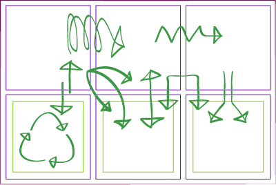

NgRx
HOUDASS Youness
Email: houd.youness@gmail.com
1- Introduction
NgRx permet de gérer l'état de votre application en la stockant dans un objet JavaScript.
Ainsi avec NgRx, tous les composants de votre application pourront partager aisément l'état de cette application.
Si vous devez vous passer de ngrx, vous auriez tendance à utiliser les outils que Angular propose pour l'interaction entre composants à savoir Input ou Output. Rassurez-vous, en procédant ainsi, vous obtiendrez à coup sûr une application effectuant des requêtes assez complexes et dans des directions assez amusantes.
Implémentations
- @ngrx/store
- @angular-redux/store
- Akita
- ...
Store
Le Store c'est tout simplement un simple objet JavaScript contenant l’état de votre application. La première étape pour définir le store, c'est de trouver les éléments constitutifs de ce dernier. Si vous concevez une boutique en ligne, le store pourra être le panier de l'utilisateur.
Installation
npm i -S @ngrx/storeou bien,
npm i -S @ngrx/{store,effects,entity,router-store}2- Reducers
Les reducers ne sont que des fonctions n'ayant qu'un seul rôle: modifier le state de votre application en fonction d'une action reçue.
3- Actions
Les actions sont des objects, de simples dénominations servant à représenter une interaction. Elles n'apportent rien de fonctionnel, et ne sont là que pour apporter un nom ("type") qui les représente et, optionnellement, un ou plusieurs arguments.
4- Selectors
Un selector est tout simplement une fonction qui prend en paramètre tout ou une partie du state de l’application et en renvoie une version formatée et/ou réduite, propice aux besoins de nos vues.
Concrètement un selector très simple pourrait être :
const getTodos = state => state.todos;5- Devtools
@ngrx/store-devtools vous permettra de voir chaque changement de state, de conserver un historique et de faire un export de vos states (et inversement).
npm i -S @ngrx/store-devtools6- Entity
@ngrx/entity fournit des méthodes (API) pour traiter directement avec notre entité comme AddOne ou AddMany, RemoveOne ...
npm i -S @ngrx/entity7- Effects
@ngrx/effects vous fournit des listenners d’actions qui peuvent effectuer des fonctions et retourner une nouvelle action (Side effects).
npm i -S @ngrx/effects8- Router
@ngrx/router-store est tout simplement un pont pour faire communiquer le router Angular à notre store.
npm i -S @ngrx/router-store9- Schematics
Les schematics peuvent être vues comme des recettes qui pourront être utilisées en ligne de commande pour générer du code, le corriger ou le mettre à jour afin de respecter les derniers breaking changes ou guidelines du framework ou d'une librairie.
ng config cli.defaultCollection @ngrx/schematicsnpm i -D @ngrx/schematicsng generate entity --name User --module somewhere/somewhere.module.tshttps://github.com/ngrx/platform/tree/master/docs/